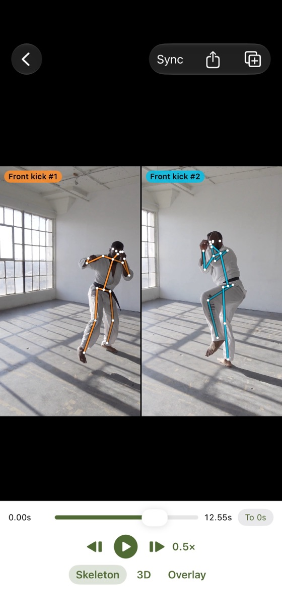
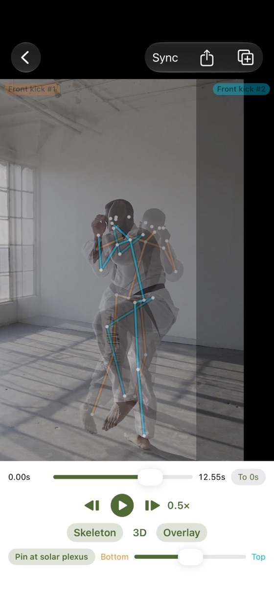
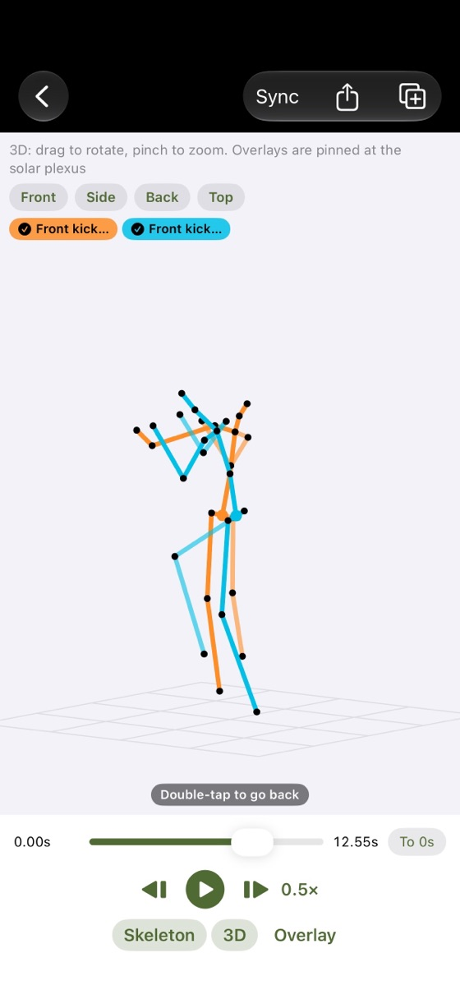
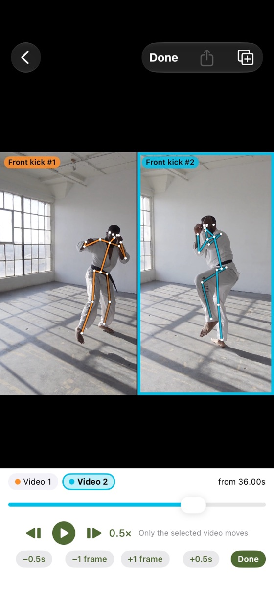

FEATURES
Features
Side by side and overlaid
Play 2–4 videos at once, or overlay two and pin them at the body’s center. Compare reps within the same video, too.
Slow motion, frame by frame
0.1× to 1× slow motion and frame stepping. Sync every video to the same moment, such as the stance or the impact.
Skeleton lines and 3D
On-device AI draws skeleton lines. Turn them into 3D and rotate to see the front, side, back or top.
Share as a video
Turn what you see into a video to send in messages or save to Photos.
SCREENS
Screens




PRICE
Pricing
Free
Free
- Skeleton lines and 3D
- Compare up to 4 videos, sync
- Share as a video
Plus
One-time purchase
- Keep 5 or more videos
- Save layouts as sets
- No mark on shared videos, no ad on the list
If you installed the app by December 13, 2026, everything is free for you, forever (no ads either).
FAQ
FAQ
Skeleton lines don’t appear.
Film the whole body (head to feet) in good light. Right after importing, keep the app open while it says it is analyzing. If it stops, reopen the app and it continues.
The 3D skeleton doesn’t appear.
3D is estimated by on-device AI, so it may not work on some models (iOS 18 or later is required). It is an estimate, not a precise measurement.
It shows someone else’s skeleton.
On the compare screen, tap “Choose person” at the top left of the video, then tap the person you want.
Can I use Plus without buying it again?
Yes. With the same Apple Account, tap “Restore purchase” after changing iPhones or reinstalling.
SUPPORT
Support
For bugs, requests or questions, please send an email.
It helps if you include your iPhone model, iOS version and the app version (“Version History” on the App Store page).
Please note
- Skeleton lines and 3D are estimates. Film the whole body for the best results.
- Get permission from the people in your videos before recording or sharing.
MORE APPS
More apps
Other apps by KLADO. The home page (in Japanese) has the full list and the story behind KLADO.
KGo to the home page